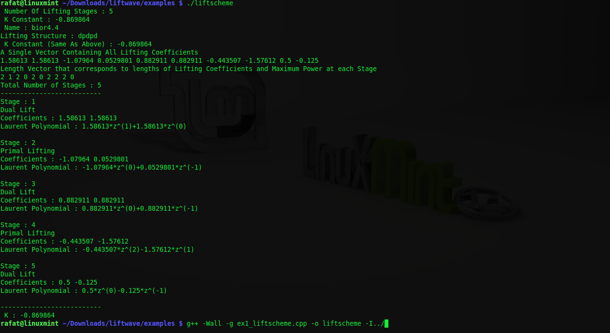
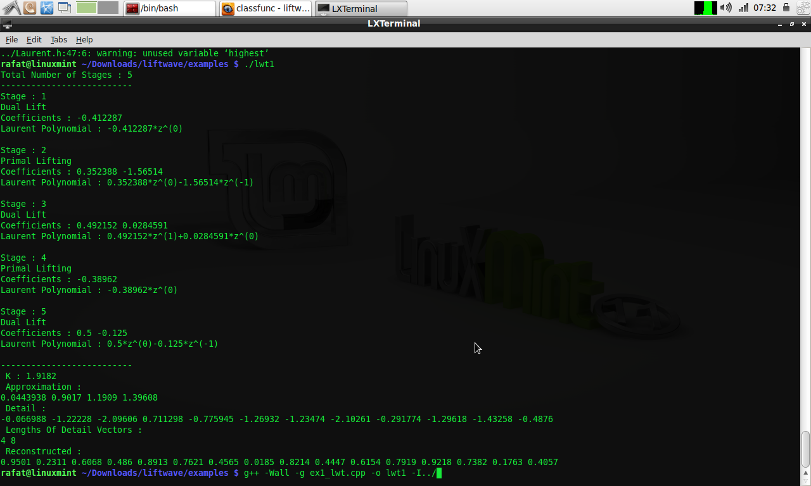

Liftwave Example Codes
Introducing liftscheme class
Liftscheme class declares a lifting scheme and you can add lifting stages using addlift.
This program
1) Declares a lifting scheme
2) Adds a lifting step
3) Displays The Information About All The Lifting Stages
The Output :
1D Lifting Wavelet Transform Example
This program
1. Uses a Length 16 pseudo-random sequence as Input.
2. Defines a lifting scheme based on db3 wavelet and adds a dual lifting step.
3. Performs a 2 Level Lifting Wavelet Transform
4. Performs an Inverse Lifting Transform on the LWT class so defined.
The Output :
2D Lifting Wavelet Transform Example
This program
1) Uses an 11X8 matrix as input.
2) Defines a Lifting Scheme (bior3.3)
3) Performs a 2 level 2D Lifting Wavelet Transform.
4) Performs a corresponding Inverse LWT.
The Output :